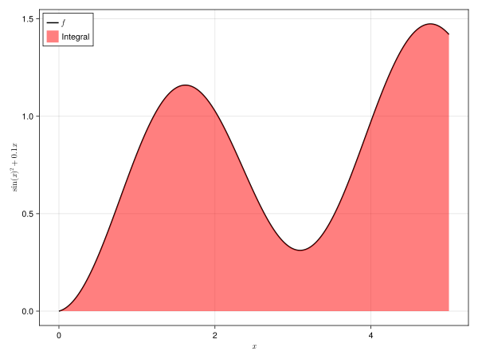
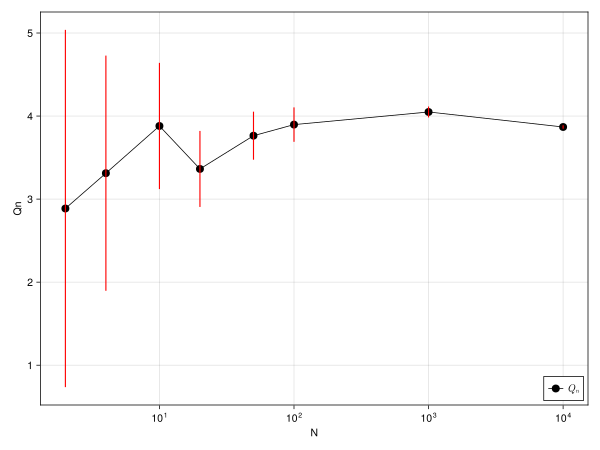
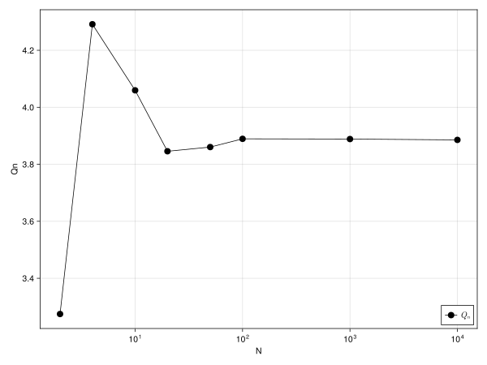

Activating project at `~/git/NumericalMethods/numerical-integration`Numerical Integration
ScPo Computational Economics 2024
Problem Definition
We want to evaluate the potentially multidimensional definite integral
\[\begin{equation} I = \int_\Omega f(x) dx \end{equation}\]
where it’s important to keep track of the volume of the function domain, i.e. we say \(\Omega\) is a subset of \(\mathbb{R}^m\) with volume
\[\begin{equation} V = \int_\Omega dx \end{equation}\]
Here is an example of \(f\):
\[ f(x) = \sin(x)^2 + 0.1 x \]
Let’s make a plot of this, where \(f\) is a black line, and the red shaded area is \(I\).
Code Setup
To run the code in this document you need have an environment where the following packages are installed:
# you need to have those packages installed.
using CairoMakie
using Random
using LaTeXStrings
using OrderedCollections # for OrderedDict
using FastGaussQuadrature # for intergration rules
using DataFrames # to display a table
using Sobol # to get sobol sequences
set_theme!() # resetting all quarto default values for fig width etcWARNING: method definition for checkbounds at /Users/floswald/.julia/packages/Interpolations/USkTk/src/Interpolations.jl:454 declares type variable N but does not use it.
WARNING: method definition for checkbounds at /Users/floswald/.julia/packages/Interpolations/USkTk/src/Interpolations.jl:457 declares type variable N but does not use it.
WARNING: method definition for GriddedInterpolation at /Users/floswald/.julia/packages/Interpolations/USkTk/src/gridded/gridded.jl:37 declares type variable pad but does not use it.
WARNING: method definition for GriddedInterpolation at /Users/floswald/.julia/packages/Interpolations/USkTk/src/gridded/gridded.jl:60 declares type variable pad but does not use it.
WARNING: method definition for interpolate! at /Users/floswald/.julia/packages/Interpolations/USkTk/src/deprecations.jl:30 declares type variable TWeights but does not use it.Show Code
x = 0:0.01:5
f(x) = sin(x)^2 + 0.1x
y = f.(x)
fig = Figure(size = (800,600))
ax = Axis(fig[1,1], xlabel = L"x", ylabel = L"\sin(x)^2 + 0.1 x")
lines!(ax, x, y, label = L"f", color = :black, linewidth = 2)
band!(ax, x, fill(0,length(x)), y, color = (:red, 0.5), label = "Integral")
axislegend(; merge = true, position = :lt)
fig
As with Riemann Integrals where we split the continuous domain of \(f\) into smaller and smaller chunks, which we then sum up (\(\int\)), the numerical counterpart does the same: measure the value of f (the height of the black line) at different points, and sum over them. The main question is:
At which points?
Monte Carlo Integration
A very intuitive first solution is to draw N random points from the domain of f, evalute the function there, and compute their average. We would approximate \(I\) as follows, where \(x_i \in \Omega\) is a randomly chosen point from the function’s domain:
\[\begin{equation} I \approx Q_N \equiv V \frac{1}{N} \sum_{i=1}^N f(x_i) = V \bar{f} \end{equation}\]
This works because the law of large numbers tells us that
\[\begin{equation} \lim_{N \to \infty} Q_N = I. \end{equation}\]
The uncertainty from this method is easily quantifiable by the resulting variation in our estimate:
\[\begin{equation} Var(f) = \sigma_N^2 = \frac{1}{N-1} \sum_{i=1}^N (f(x_i) - \bar{f})^2 \end{equation}\]
from which we get the variance of \(Q_N\) as \(Var(Q_N) = V^2 \frac{\sigma_N^2}{N}\). Hence,clearly visible that this decreases as \(N\) increases. We usually report the standard error of the estimator, so we report
\[\begin{equation} \sigma_Q \equiv \sqrt{Var(Q_N)} = V \frac{\sigma_N}{\sqrt{N}} \end{equation}\]
👍
Compute \(\sigma_Q\)!
Write a function that takes \(f\) from above, and computes standard error \(\sigma_Q\) for \(N\) points. Your function should take arguments sample_points, which is a vector of evaluation points, and fun, which is a function to evaluate.
Show Code
function σ(sample_points,fun)
N = length(sample_points)
ys = fun.(sample_points)
ybar = sum(ys) / N # mean
var = 1 / (N-1) * sum( (ys .- ybar) .^ 2 )
sqrt(var)
endσ (generic function with 1 method)
Compute the monte carlo integral and it’s error!
Write a function mc_integrate that takes \(f\) from above, and computes both the monte carlo integration \(Q_N\) as well as its standard error \(\sigma_Q\) for a set of \(N\) randomly chosen points. Your function should take arguments N, which is a vector of evaluation points, and fun, which is a function to evaluate. Set a random seed to ensure reproducibility. Then, call your function to compute \(Q\) for \(N \in \{2,4,10,20,50,100,1000,10000\}\) and compare the outputs. Produce an OrderedDict where the keys are those values for \(N\).
Show Code
function mc_integrate(N,fun)
Random.seed!(0) # any number works
V = 5 # integrate dx from 0 to 5
pts = rand(N) .* V # N random numbers in [0,5]
mc_integral = V / N * sum( fun.(pts) )
mc_error = V * σ(pts,fun) / sqrt(N)
mc_integral, mc_error
end
ns = [2,4,10,20,50,100,1000,10000]
mc_results = OrderedDict(k =>
mc_integrate(k,f) for k in ns);
Now make a plot!
Taking the dict from the above question, write a function that makes a line plot with \(N\) on the x axis and your estimate of the integral on the axis. Also add the error bars with band! function! Your function should take the output OrderedDict from above as argument. Scale the x-axis as log10.
Show Code
function plot_mc(od::OrderedDict; errors = true)
x = collect(keys(od))
v = collect(values(od))
Q = [i[1] for i in v]
E = [i[2] for i in v]
fig = Figure(size = (800,600))
ax = Axis(fig[1,1], xlabel = "N", ylabel = "Qn", xscale = log10)
lines!(ax, x, Q, label = L"Q_n", color = :black, linewidth = 1)
scatter!(ax, x, Q, label = L"Q_n", color = :black, markersize = 15)
if errors errorbars!(ax, x, Q, E; wiskerwidth = 1, color = (:red)) end
axislegend(; merge = true, position = :rb, unique = true)
return fig
end
plot_mc(mc_results)
The last point, for \(N=10000\) is what we’ll consider as the true value. You can see, it takes us quite long until the monte carlo method converges to that value. So, that’s the main drawback of this method.
Quasi-Monte carlo
That’s a version where we do not choose random numbers as evaluation points, but sub-random sequences or low discrepancy sequences of random numbers, which aim at variance reduction. Everything else is the same.
Modify your
mc_integrate for Quasi-MC
Modify your function from above so that instead of rand it chooses numbers from the Sobol sequences. Then make the plot again.
Using
Sobol.jl
- make a constructor:
s = SobolSeq(lb,ub)whereub,lbare vectors of upper and lower bounds - get n sobol-random numbers into a vector with
reduce(vcat, next!(s) for i in 1:n)
Show Code
function qmc_integrate(N,fun)
Random.seed!(0) # any number works
V = 5 # integrate dx from 0 to 5
s = SobolSeq([0], [5])
pts = reduce(vcat, next!(s) for i in 1:N)
mc_integral = V / N * sum( fun.(pts) )
mc_error = V * σ(pts,fun) / sqrt(N)
mc_integral, mc_error
end
qmc_results = OrderedDict(k =>
qmc_integrate(k,f) for k in ns);
One of the merits of quasi monte carlo integration is that it’s rate of convergence is faster. You see that here various integrations stabilize at the “true” value (where \(N=1000\)) earlier than before. Notice I removed the error bars from the plot because I the previous formula is no longer correct. However it’s good to know that the relationship between QMC and MC errors is
\[ O\left(\frac{(\log N)^s}{N} \right) \quad vs \quad O\left( \frac{1}{\sqrt{N}} \right) \]
therefore, for QMC to do better than MC, we need \(s\) small and \(N\) large. In other words, in high-dimensional settings (high \(s\)), you might actually do better with straight MC.
Gaussian Quadrature integration
Based on an early contribution of Carl Friedrich Gauss, we have that an \(n\)-point quadrature rule will yield an exact integration result to functions that look like polynomials of degree \(2n -1\), or less, by choosing \(n\) suitable nodes \(x_i\) and weights \(w_i\). That is quite the result. The wikipedia entry is very interesting. Basically, we will now concentrate on how to do better than in monte carlo integration, where each point gets the same weight \(1/N\), and where our only hope is to generate a very large set of sample points, which may be costly.
We continue in the above framework, i.e. in order to compute the expected value of a function \(G\), say, we do the following:
\[ E[G(\epsilon)] = \int_{\mathbb{R}^N} G(\epsilon) p(\epsilon) d\epsilon \approx \sum_{j=1}^J w_j G(\epsilon_j) \]
We have some explanation to do:
- \(N\) is the dimensionality of the integration problem.
- \(G:\mathbb{R}^N \mapsto \mathbb{R}\) is the function we want to integrate wrt \(\epsilon \in \mathbb{R}^N\).
- \(p\) is a density function s.t. \(\int_{\mathbb{R}^n} p(\epsilon) d\epsilon = 1\).
- \(w\) are integration weights such that (most of the time) \(\sum_{j=1}^J w_j = 1\).
- \(\epsilon_j\) are integration nodes, i.e. the points where we choose to evaluate function \(G\). Notice that nodes and weights come in pairs.
- We will look at normal shocks \(\epsilon \sim N(0_N,I_N)\)
- in that case, the weighting function becomes \(w(\epsilon) = (2\pi)^{-N/2} \exp \left(-\frac{1}{2}\epsilon^T \epsilon \right)\)
- \(I_N\) is the n by n identity matrix, i.e. there is no correlation among the shocks for now.
- Other random processes will require different weighting functions, but the principle is identical.
- For now, let’s say that \(N=1\)
Different Quadrature Rules
- We focus exclusively on those and leave Simpson and Newton Cowtes formulas out.
- This is because Quadrature is the method that in many situations gives highes accuracy with lowest computational cost.
- Quadrature provides a rule to compute weights \(w_j\) and nodes \(\epsilon_j\).
- There are many different quadrature rules.
- They differ in their domain and weighting function.
- wikipedia again has a useful table for us.
- In general, we can convert our function domain to a rule-specific domain with change of variables.
Gauss-Hermite: Expectation of a Normally Distributed Variable
- There are many different rules, all specific to a certain random process.
- Gauss-Hermite is designed for an integral of the form \[ \int_{-\infty}^{+\infty} e^{-x^2} G(x) dx \] and where we would approximate \[ \int_{-\infty}^{+\infty} e^{-x^2} f(x) dx \approx \sum_{i=1}^n w_i G(x_i) \]
- Now, let’s say we want to approximate the expected value of function \(f\) when it’s argument is \(z\sim N(\mu,\sigma^2)\): \[ E[f(z)] = \int_{-\infty}^{+\infty} \frac{1}{\sigma \sqrt{2\pi}} \exp \left( -\frac{(z-\mu)^2}{2\sigma^2} \right) f(z) dz \]
Gauss-Quadrature with \(N>1\)?
Easy: we just take the kronecker product of all univariate rules, i.e. the kronecker product amongst all weights and all nodes. Let’s look at an example.
- This works well as long as \(N\) is not too large. The number of required function evaluations grows exponentially. \[ E[G(\epsilon)] = \int_{\mathbb{R}^N} G(\epsilon) p(\epsilon) d\epsilon \approx \sum_{j_1=1}^{J_1} \cdots \sum_{j_N=1}^{J_N} w_{j_1}^1 \cdots w_{j_N}^N G(\epsilon_{j_1}^1,\dots,\epsilon_{j_N}^N) \] where \(\omega_{j_1}^1\) stands for weight index \(j_1\) in dimension 1, same for \(\epsilon\).
- Total number of nodes: \(J=J_1 J_2 \cdots J_N\), and \(J_i\) can differ from \(J_k\).
- Suppose we have \(\epsilon^i \sim N(0,1),i=1,2,3\) as three uncorrelated random variables.
- Let’s take \(J=3\) points in all dimensions, so that in total we have \(J^N=27\) points.
Quadrature with julia
np = 3 # number of points
# functions from FastGaussQuadrature.jl
rules = Dict("hermite" => gausshermite(np),
"chebyshev" => gausschebyshev(np),
"legendre" => gausslegendre(np),
"lobatto" => gausslobatto(np));Here are the respective nodes and weights for each of those four rules:
4×3 DataFrame
| Row | Rule | nodes | weights |
|---|---|---|---|
| Symbol | Array… | Array… | |
| 1 | lobatto | [-1.0, 0.0, 1.0] | [0.333333, 1.33333, 0.333333] |
| 2 | hermite | [-1.22474, -1.11022e-15, 1.22474] | [0.295409, 1.18164, 0.295409] |
| 3 | legendre | [-0.774597, 0.0, 0.774597] | [0.555556, 0.888889, 0.555556] |
| 4 | chebyshev | [-0.866025, 6.12323e-17, 0.866025] | [1.0472, 1.0472, 1.0472] |
Approximating an AR1 process
http://karenkopecky.net/Rouwenhorst_WP.pdf